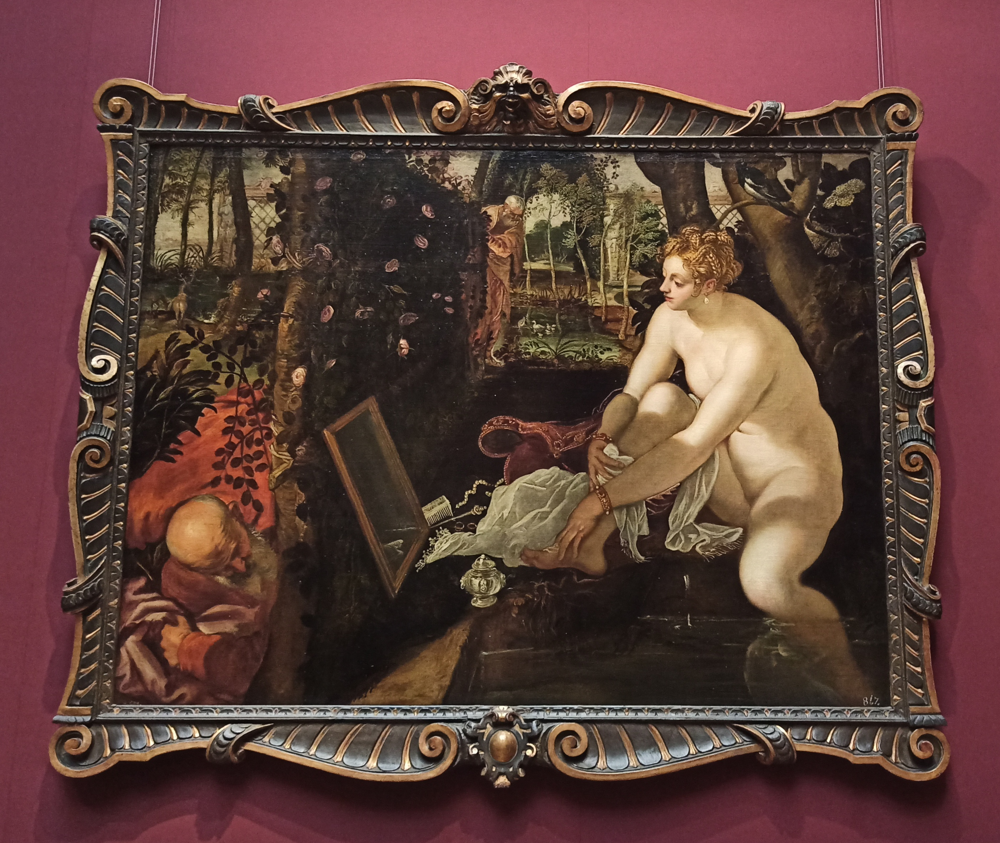
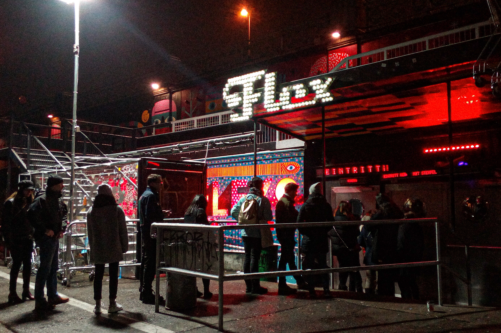
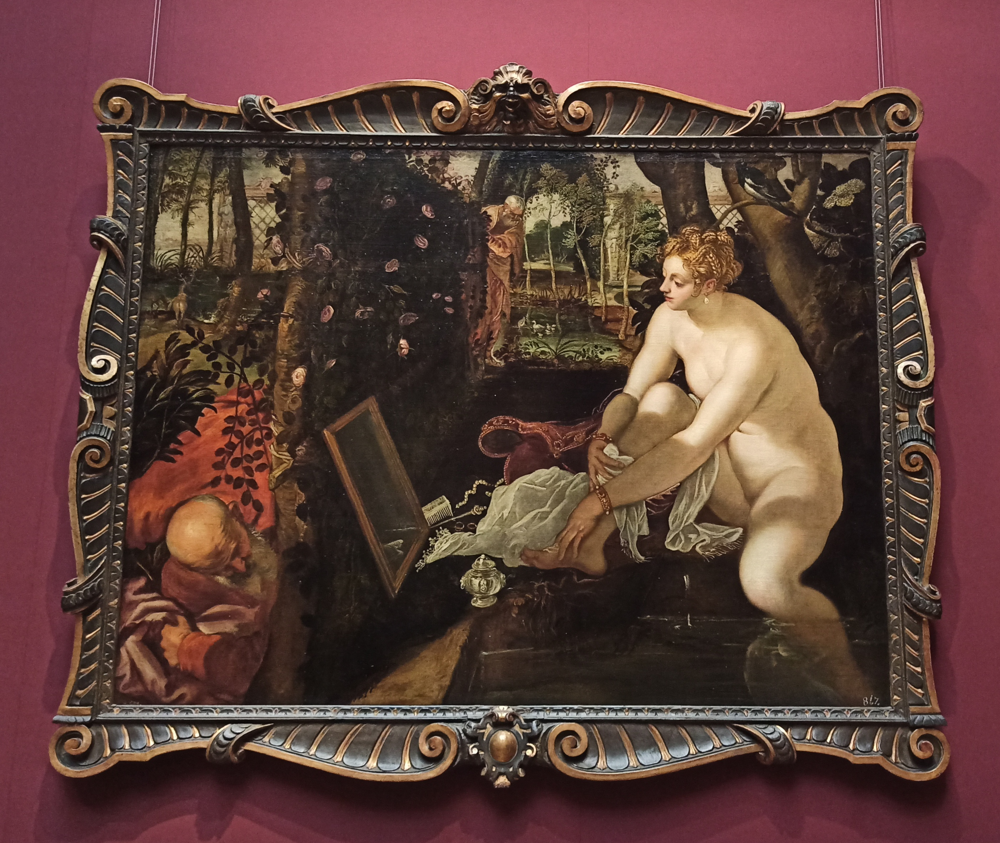
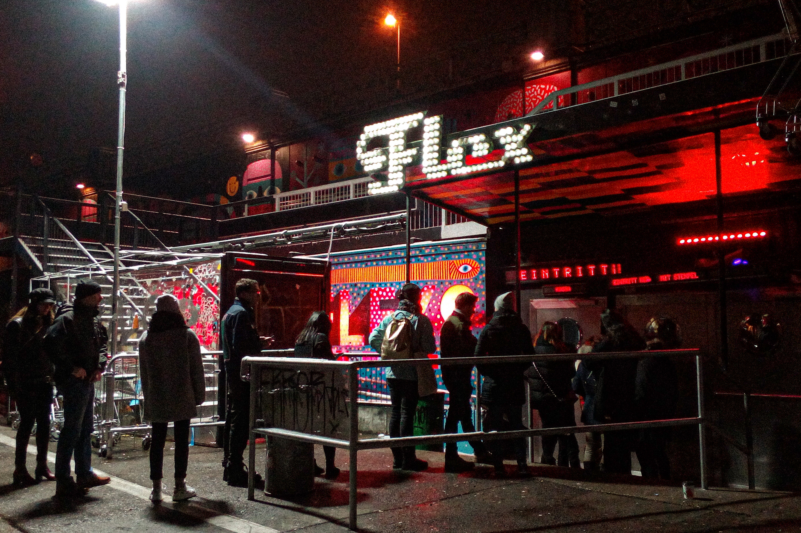

the first time we met was in 2014 on a week trip with my dad - what I remember is seeing kunsthistorisches museum, singing the jam’s “going underground” the whole trip, and getting noodles on schwedenplatz.
since then you’ve been a day trip destination for seeing exhibitions and concerts; some highlights were seeing johnny marr and franz ferdinand (and experiencing the most grounded moment during ‘walk away’), buying the stone roses vinyl - my first one ever, albertina modern, gurkensalat, stadtpark, chocolate rolls in the serbian bakery (“ma može, da se razumemo!!!”).
the most recent memory I have of you is turning 22 to the intro bass of ‘lucretia my reflection’. also forgetting to load money onto my prepaid card, making the swing kitchen server think I was completely broke and getting a free drink before having a chance to explain the situation.
and that’s all so far, thank you and see you again!
 


